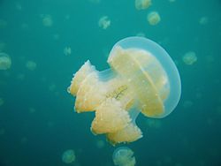

แมงกะพรุน

แมงกะพรุน หรือ กะพรุน จัดอยู่ในประเภทสัตว์ไม่มีกระดูกสันหลัง ไฟลัมไนดาเรีย ไฟลัมย่อยเมดูโซซัว
แบ่งออกเป็นอันดับได้ 5 อันดับ (ดูในตาราง)
ลักษณะลำตัวใสและนิ่มมีโพรงทำหน้าที่เป็นทางเดินอาหารมีเข็มพิษที่บริเวณหนวดที่อยู่ด้านล่าง
ไว้ป้องกันตัวและจับเหยื่อ เมื่อโตเต็มวัย ส่วนประกอบหลักในลำตัวเป็นน้ำร้อยละ 94-98 ด้านบนเป็นวงโค้งคล้ายร่ม
ด้านล่างตอนกลางเป็นอวัยวะทำหน้าที่กินและย่อยอาหาร พบได้ในทะเลทุกแห่งทั่วโลก
แมงกะพรุนส่วนใหญ่จัดอยู่ในอันดับไซโฟซัว แต่ก็บางประเภทที่อยู่ในอันดับไฮโดรซัว อาทิ แมงกะพรุนไฟหมวกโปรตุเกส
(Physalia physalis) ซึ่งเป็นแมงกะพรุนที่มีพิษร้ายแรงที่สุดในโลก และแมงกะพรุนอิรุคันจิ (Malo kingi)
ที่อยู่ในอันดับคูโบซัว ก็ถูกเรียกว่าแมงกะพรุนเช่นกัน
รูปร่าง
แมงกะพรุนเป็นสัตว์ที่มีลำตัวโปร่งใส ร่างกายประกอบด้วยเจลาตินเป็นส่วนใหญ่ สามารถมองเห็นเข้าไปได้ถึงอวัยวะภายใน
เป็นสัตว์ที่ไม่มีทั้งสมองหรือหัวใจ ลำตัวด้านบนของแมงกะพรุนมีลักษณะคล้ายร่ม เรียกว่า "เมดูซา"
ซึ่งศัพท์นี้ก็ใช้เป็นอีกชื่อหนึ่งของแมงกะพรุนด้วยเช่นกัน
แมงกะพรุนเป็นสัตว์ที่ถือกำเนิดขึ้นมาแล้วกว่า 505 หรือ 600 ล้านปี โดยถือกำเนิดก่อนไดโนเสาร์ถึง 230 ล้านปี
หรือก่อนมนุษย์ราว 500,000 ปี โดยถือได้ว่าเป็นสัตว์ที่ถือกำเนิดมานานแล้วจำพวกหนึ่งที่มีวิวัฒนาการสูงสุด
มีวงจรชีวิตที่ขยายพันธุ์ได้ทั้งแบบอาศัยเพศและไม่อาศัยเพศ